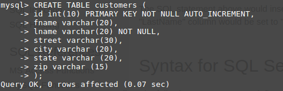
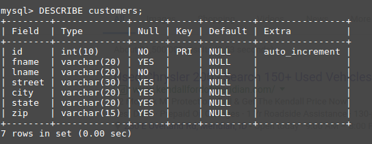

Full Stack!
Created by Alejandro Echavarria 4/5/17
What is a full stack Web Developer?
- Use google fonts
- Use a good relevant background
- define "full" (interesting)
- define "stack"
- define "LAMP stack"
- Mack in-line links to the key words in the definitions
- checkpoint grade
- define "database"
- Define and illustrat (inkscape) mySQL
- Illustrate a typical DataBase
- List and explain mySQL CLI steps to create a DB, table, records
- checkpoint grade
What does "Full" mean?
"Full" means that you work on more than a single aspect of web development.
You work on both Front and Back end of development.
Frontside is client-based; whereas back end is server based.
What does "Stack" mean?
"Stack" [in web development] is defined as the variety of programs used.
Front end development includes CSS, HTML, and JavaScript.
Back end development includes PHP and mySQL.
What is a "LAMP" stack?
LAMP stands for:
Linux - Operating system which is the standard for computer programming
Apache - a web server
mySQL - Database language
PHP - Programming language on the server side
1.
A database is an organized way to store data on a server. The backbone of all businessses globally in order to track various information such as employee hours, paychecks, and products.
2.
MySQL if the second most used Database Language in the world. Oracle and other languages are sometimes preferred because of their technical support offered. MySQL is a free
language.
SQL
Structured Query Language. MySQL is the name of the database while SQL is the language. Therefore it is universally used by all databases.
step 6
- compsci@compsci-ThinkCentre-M92p ~ $ mysql -u root -p
- Enter password:
- mysql>
- mysql> show databases;
- mysql> CREATE DATABASE a4_echavarria_may16;
- mysql> show databases;
- mysql> USE a4_echavarria_may16
mysql> CREATE TABLE student_info (
-> id int(8),
-> fname varchar(20),
-> lname varchar(20)
-> );
- mysql> DESCRIBE student_info;
- mysql> DROP DATABASE a4_echavarria_may16
-

-
